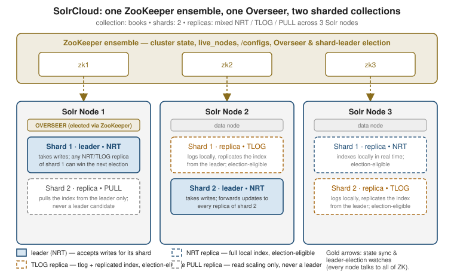

SolrCloud architecture
|
This content was generated with the assistance of AI and should be verified against the official documentation before being relied on in production. |
SolrCloud is what turns a set of independent cores into one coordinated collection: an external Apache ZooKeeper ensemble holds the cluster’s shared state, one Solr node is elected Overseer to serialize collection-management changes, and each shard elects its own leader among its replicas. This page covers that coordination layer end to end — what ZooKeeper actually stores, how the Overseer and shard leaders are chosen, the three replica types and when to pick each, and how to bring a cluster up and load its configuration.
Collections, shards, replicas, cores
The vocabulary is unchanged from
Cores vs. collections: a
collection is the logical, named index your application queries; it is split into shards, each shard
holds a distinct slice of the documents, and each shard is served by one or more replicas. Every replica — leader or not — is physically an ordinary core, auto-named like books_shard1_replica_n1, living inside
some Solr node’s data directory. What SolrCloud adds on top of that vocabulary is everything below: a
ZooKeeper-backed registry of which cores exist and where, and an election protocol that picks which replica of
each shard is currently allowed to accept writes.
ZooKeeper: the cluster’s source of truth
Every SolrCloud node connects to the same ZooKeeper ensemble and keeps a local, continuously-updated watch on its znodes rather than polling. Broadly:
| znode | What it holds |
|---|---|
|
An ephemeral entry per running Solr node, created on connect and removed automatically (by ZooKeeper’s own session expiry) the instant that node disconnects — this is how the rest of the cluster learns a node is gone. |
|
The authoritative cluster state for one collection: its shards, every replica’s core name, node, replica type, and which replica is the current leader. |
|
A configset — |
|
The Overseer’s work queue and the ephemeral nodes used to elect it. |
Because configsets live in ZooKeeper rather than on each node’s local disk, adding a node or replacing a dead
one needs no manual file copy: the new replica simply reads its collection’s configset out of ZooKeeper on
startup. Collections API, configsets & replica placement covers configset reuse, versioning, and the
CREATE/RELOAD collection actions that read from it.
A production ensemble should run an odd number of ZooKeeper servers — 3 tolerates one failure, 5 tolerates
two — because it needs a strict majority (quorum) alive to keep serving writes; running only 1 or 2 gives up
either redundancy or availability for no benefit. bin/solr start -e cloud launches a disposable, embedded
single-node ZooKeeper for local trials only — point at a real external ensemble for anything that must
survive a ZooKeeper node failing.
# Start Solr in cloud mode against an external 3-node ensemble, with a chroot path
# so several Solr clusters can share one ensemble under separate znode subtrees.
bin/solr start -e cloud -z zk1:2181,zk2:2181,zk3:2181/solr
# The chroot path (/solr) must already exist as a znode unless you opt in to creating it:
ZK_CREATE_CHROOT=true bin/solr start -e cloud -z zk1:2181,zk2:2181,zk3:2181/solr
# Avoid repeating -z on every command: set it once in the include file instead.
echo 'ZK_HOST="zk1:2181,zk2:2181,zk3:2181/solr"' >> bin/solr.in.sh
# https://solr.apache.org/guide/solr/latest/deployment-guide/zookeeper-ensemble.htmlUpload a configset before creating any collection that references it, using either the bin/solr zk
subcommand or the lower-level zkcli.sh it wraps:
# bin/solr zk: upconfig pushes a local directory into /configs/<name>.
bin/solr zk upconfig -z zk1:2181,zk2:2181,zk3:2181/solr -n books -d server/solr/configsets/_default/conf
# zkcli.sh is the same operation, spelled out explicitly -- useful in scripts that
# already invoke it directly rather than through bin/solr.
server/scripts/cloud-scripts/zkcli.sh -zkhost zk1:2181,zk2:2181,zk3:2181/solr \
-cmd upconfig -confname books -confdir server/solr/configsets/_default/conf
# Now the collection can reference the uploaded configset by name.
bin/solr create -c books -s 2 -rf 3 -n books
# https://solr.apache.org/guide/solr/latest/deployment-guide/zookeeper-ensemble.htmlThe Overseer
Collection-management operations — creating a collection, adding or deleting a replica, splitting a shard — are not applied directly by whichever node receives the API call. They are queued as messages in
/overseer/queue, and exactly one node in the cluster, the Overseer, dequeues and applies them one at a
time, writing the result into each collection’s state.json. Serializing every such change through one node
is what keeps two concurrent ADDREPLICA calls from racing each other into an inconsistent cluster state.
The Overseer itself is just another elected role, using the same ZooKeeper ephemeral-node election mechanism
as shard-leader election below — if the Overseer node dies, a new one is elected automatically and resumes
from the queue. Since Solr 9.7, a node’s willingness to hold that role is controlled with -Dsolr.node.roles
at startup:
# overseer:preferred steers overseer elections toward nodes not also serving as data
# nodes for heavy collections; data:off means this node hosts no shards/replicas at all.
bin/solr start -c -z zk1:2181,zk2:2181,zk3:2181/solr \
-Dsolr.node.roles=data:off,overseer:preferred
# Default when unset: every node is a normal, overseer-eligible data node.
bin/solr start -c -z zk1:2181,zk2:2181,zk3:2181/solr -Dsolr.node.roles=data:on,overseer:allowed
# https://solr.apache.org/guide/solr/latest/deployment-guide/node-roles.html# Which node is currently the Overseer, and what's still queued for it.
curl "http://localhost:8983/solr/admin/collections?action=OVERSEERSTATUS&wt=json"Shard-leader election
Within one shard, exactly one replica is the leader at any moment; it is the one Solr routes writes to first, and it forwards each update to every other replica of that shard before acknowledging it. Election runs per shard, independently of the cluster-wide Overseer election, using the same ZooKeeper primitive: replicas race to create an ephemeral sequential znode under that shard’s election path, and the lowest-numbered live entry wins. In practice this means the first replica to come up for a brand-new shard wins by default, and afterwards a new election runs — among whichever replicas are both live and eligible — the moment the current leader’s node session expires (crash, network partition, restart).

Only NRT and TLOG replicas are ever eligible; a PULL replica can never win, for the reason covered next.
# Full cluster state: every shard's replicas, their types, and which one is the leader.
curl "http://localhost:8983/solr/admin/collections?action=CLUSTERSTATUS&collection=books&wt=json"
# https://solr.apache.org/guide/solr/latest/deployment-guide/solrcloud-shards-indexing.htmlLosing a leader is invisible to a well-behaved client: a write sent to the old leader’s URL fails over, the
CloudSolrClient (or a load balancer reading /live_nodes and state.json) discovers the new leader from
the refreshed cluster state, and retries against it.
Distributed indexing & search covers how a write actually gets routed to the
correct shard’s leader in the first place, and how a scatter-gather query reaches every shard once leaders and
replicas are settled.
Replica types: NRT, TLOG, PULL
Every replica added to a shard is created as one of three types, set once at ADDREPLICA/create time via
type=:
| Type | What it does | Leader-eligible? |
|---|---|---|
|
Indexes documents locally like a near-real-time core: maintains its own transaction log and writes straight into its own Lucene index. |
Yes |
|
Maintains a transaction log like an NRT replica, but does not index locally — it keeps its Lucene index current by replicating it from the leader instead of applying each update itself. |
Yes — replays its own transaction log to catch up before serving as leader |
|
Neither logs nor indexes locally; it only pulls a completed index from the leader on a schedule, the same mechanism user-managed replication uses. |
Never |
The trade-off is indexing cost versus read capacity: an NRT replica pays the full cost of applying every update itself (so it can also lead), a TLOG replica pays only for the transaction log and gets its index for free from the leader (cheaper per-replica indexing load, still election-eligible as a durability fallback), and a PULL replica pays nothing at index time at all — pure read scale-out that can never take over writes. Solr’s own guidance is to keep a shard’s replicas uniform — all NRT, all TLOG, or TLOG leaders backed by PULL read replicas — and to avoid mixing all three types on one shard, since PULL’s lag then interacts unpredictably with which of the other two is currently leading.
# All-NRT: every replica indexes and any of them can lead -- the default, right for
# small-to-medium collections that want simple near-real-time visibility everywhere.
bin/solr create -c books -s 2 -rf 3
# TLOG + PULL: one indexing tier (implicit TLOG leader/replicas) plus pure read
# replicas added afterwards for search fan-out that never touches indexing load.
curl "http://localhost:8983/solr/admin/collections?action=ADDREPLICA&collection=books&shard=shard1&type=PULL&wt=json"
# https://solr.apache.org/guide/solr/latest/deployment-guide/solrcloud-shards-indexing.htmlReach for TLOG+PULL once indexing throughput and query fan-out start competing for the same nodes' CPU; until then, all-NRT is the simplest correct default. Indexing internals & performance covers the segment-merge and commit costs each replica type is actually paying for.
Bringing a cluster up
Putting the pieces together, standing up a new SolrCloud collection from nothing is: start every node against the ensemble, upload the configset once, then create the collection.
# On each of 3 hosts, start Solr in cloud mode against the same ensemble.
bin/solr start -c -z zk1:2181,zk2:2181,zk3:2181/solr -p 8983
# From any one host, load the configset the collection will reference (once).
bin/solr zk upconfig -z zk1:2181,zk2:2181,zk3:2181/solr -n books -d server/solr/configsets/_default/conf
# Create a 2-shard, 3-replica-per-shard collection using that configset.
bin/solr create -c books -s 2 -rf 3 -n books
# Confirm the shards, replicas, and elected leaders SolrCloud actually settled on.
curl "http://localhost:8983/solr/admin/collections?action=CLUSTERSTATUS&collection=books&wt=json"From here, Collections API, configsets & replica placement covers reconfiguring and reloading a live collection’s configset, adding shards and replicas after creation, and shard splitting; Distributed indexing & search covers how document routing picks a shard and how a query fans out across the topology this page just built.